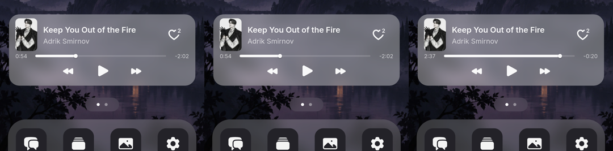
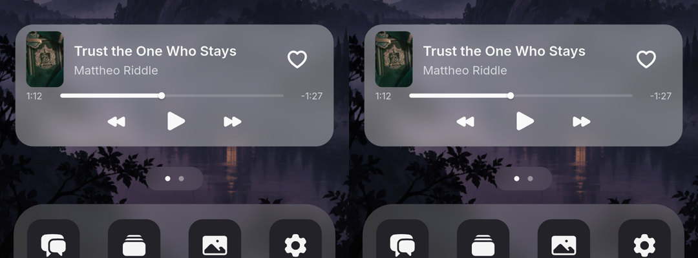

ANDROID DEVICE TEST · 2026-10-23
MiniPhone 音乐播放
测试报告
核心播放、暂停、切歌、拖动、页面间状态同步、后台暂停和重启进度恢复可用。15 项真机检查中，14 项通过（其中上一首按加载完成条件判定），1 项失败。发现 1 个可复现的桌面进度条触摸区域问题，另记录 1 个缓冲体验观察项。本次不作“全部通过”结论。
15真机检查项
14通过
1可复现问题
68/69代码测试通过
设备 Pixel 6 · Android 17 · 1080×2400 · 420 dpi
应用 com.worldo.ai · 9.9.9 (999) · production release ARM64
执行时间 2026-10-23 11:10 Asia/Shanghai — 2026-10-23 11:25 Asia/Shanghai
代码提交 ac84f5c82e0e370dd9d286cede4747ade2dc8ffd
APK SHA-256 e15c5acb082d4097281d783cc1c4b951c575d890b4867e18bcc6bbb35eb0ef58
已核对手机实际安装包；最终使用仓库锁定依赖。账号、缓存保留，业务代码未修改。
真机检查结果
| ID | 检查点 | 结果 | 实际观察 | 截图 |
|---|
| M01 | 目录与播放器入口 | 通过 | 已有 World → MiniPhone 第二屏 → 音乐；真实标题、作者、来源和封面成功展示。初始未自动播放。 | 14 |
| M02 | 播放、暂停、恢复 | 通过 | 首次播放建立 MUSIC 音轨；暂停后两次采样均为 0:09 且音轨 paused。桌面恢复后进度由 1:11 推进至 1:29，音轨 started。 | 16 · 17 · 18 · 29 · 30 |
| M03 | 下一首 | 通过 | Keep You Out of the Fire 切换到 Trust the One Who Stays，显示 0:04，系统音轨 started。 | 32 |
| M04 | 上一首：当前曲重播 | 通过 | 当前曲已超过 3 秒时点击上一首，仍为 Trust the One Who Stays 并回到 0:00；后续恢复推进至 0:46。 | 33 · 35 |
| M05 | 上一首：切回前曲 | 通过（加载完成后） | Sunny Side Up 在 0:00、控件可用时点击上一首，切回 Trust the One Who Stays。缓冲阶段的点击限制另见观察项 O01。 | 60 · 61 · 62 |
| M06 | 封面滑动切歌 | 通过 | 在 Trust the One Who Stays 封面右滑，切至 Keep You Out of the Fire；后续播放和拖动使用该曲继续完成。 | 36 · 39 |
| M07 | 完整播放器连续拖动 | 通过 | 连续向前、向后拖动，最后目标约为 1:06；之后显示 1:11 且音轨 started，未回到较早目标。 | 38 · 39 |
| M08 | 桌面卡片与完整播放器同步 | 通过 | 桌面播放进度持续推进，打开完整播放器保持同曲；桌面进度条中心点击可从 0:54 跳至 2:37，暂停状态保持。 | 30 · 31 · 47 · 49 |
| M09 | 桌面进度条扩大触摸区域 | 失败 | 中心点击有效；同一目标上方约 18 个逻辑像素处点击无响应，仍停留 0:54。当前紧凑 Slider 高 20，已有测试要求至少 48。 | 47 · 48 · 49 |
| M10 | 关闭 MiniPhone 后继续播放 | 通过 | 播放器右上角关闭，返回 World 地图；音轨仍为 started。 | 40 |
| M11 | World 浮动音乐按钮 | 通过 | 在暂停状态点击手机入口上方的播放气泡，系统音轨恢复 started。 | 42 · 43 |
| M12 | 后台暂停与前台恢复规则 | 通过 | 返回 Android 桌面后音轨 paused；再打开 Worldo 仍 paused，没有自动恢复播放。 | 41 · 42 |
| M13 | 退出、重进 World | 通过 | 播放中退出 World 后音轨 paused；重进同一 World 后入口音乐提示清空，打开 MiniPhone 保留原歌曲和 1:24 的暂停进度。 | 44 · 45 · 46 |
| M14 | 结束后自动下一首 | 通过 | 从 Keep You Out of the Fire 的 2:37 附近继续播放至结束，自动进入 Trust the One Who Stays，显示 0:12 且音轨 started。 | 50 · 51 |
| M15 | 应用进程重启后恢复 | 通过 | Trust the One Who Stays 暂停在 1:12；保留数据结束进程并重新打开，再进入同一 World，仍是同曲 1:12，保持暂停且未建立播放音轨。 | 63 · 65 |
F01 · 桌面进度条触摸区域过窄
影响位置：MiniPhone 桌面音乐卡片，紧凑进度条。建议优先级：P2（交互易用性）。
复现：暂停歌曲；点击进度条中心 (400,1697)，显示 0:54；点击目标 (800,1650)，进度仍为 0:54；改点同一横坐标的中心 (800,1697)，成功跳到 2:37。坐标为该 Pixel 6 的物理像素。
该机密度 420 dpi，纵向偏移 47 个物理像素约为 17.9 个逻辑像素。当前 compact Slider 高度为 20，偏移点落在实际区域外；已有组件测试要求两种布局均至少 48，并测试中心下方 18 个逻辑像素的拖动。
代码测试与真机对照结果一致。可见细轨道保持原样即可，建议扩大透明触摸区域，并回归点击、拖动、页面横滑和相邻按钮。此次只记录问题，未修复代码。

左：中心点击后 0:54；中：上移约 18 个逻辑像素点击无响应；右：同一横坐标中心点击到 2:37。
源码：mini_phone_music_widgets.dart:406；失败测试：mini_phone_music_widgets_test.dart:218。
O01 · 归零与切歌期间的等待
暂停后拖到 0:00，紧接着点击上一首，在两首歌上都观察到短期内仍停留当前曲；第一段约一分钟后采样仍停在 0:00、无 started 音轨。随后下一首可恢复；另一段等待后再点击上一首，可以正常切回前曲。
当前两个播放器的上一首／下一首按钮均在 music.loading 时禁用，这与缓冲期间点击无响应的现象相符。未直接读取当时内部 loading 值，也没有抓取媒体请求，所以不能据此确定客户端、CDN、网络或解码器是哪一方造成等待。
建议用可控网络条件补测“暂停→归零→立即上一首”，同时记录下载／缓冲状态与按钮是否可用；评估现有界面是否足够说明等待状态。日志中的 MediaCodec Handler 警告已保留，但未证明与此现象存在因果关系，也未观察到由此导致的崩溃。
证据：52 · 53 · 54 · 55 · 57 · 59 · 62。54 号文件的名称包含 offline，但本次未关闭网络。
受控代码测试
8 个测试文件共 69 项：68 通过、1 失败。失败断言要求紧凑 Slider 高度至少 48，实际为 20.0，与真机触摸对照结果一致。其余服务、缓存、生命周期、World 所有权、页面与封面手势用例通过。此层结果不替代真实设备与服务验证。
最终测试日志 · 构建日志 · 安装日志 · 安装包校验 · 设备警告 · 操作时间线
覆盖边界
真机依据为实时截图、操作时间线和 Android AudioPlaybackConfiguration（started／paused、MUSIC、44.1 kHz）。没有进行外放录音或人工听感验收，不能证明音质、音量或无杂音。
设备为一台 Pixel 6、Android 17、竖屏、现有账号和同一个 World。未覆盖其他 Android 版本、iOS、蓝牙／耳机、来电中断、横屏／大字体、跨账号／环境切换、跨 World 真机恢复。
未执行真机断网／弱网注入、未缓存曲目失败恢复，以及 10 首音频缓存的真实落盘与淘汰验证。缓存、失败保留、生命周期和跳转竞态仅有本次受控代码测试覆盖。
初次阶段出现未包含在操作序列内的页面切换，21–25 号阶段不参与验收，用户确认可继续后重新执行关键步骤。播放动画期间 UIAutomator 可能不能生成新界面树，早期 XML 不单独作为结果依据；后续主要使用截图与音轨状态，并对需要的静态界面删除旧树后重新读取。
本次使用 production release 包及真实现有账号，未启用 mock。未独立审计账号保存的 API host 覆盖设置，因此不将客户端真实运行结果扩大为指定后端环境的完整验收。
结束状态
手机停在 MiniPhone 桌面，Trust the One Who Stays 暂停于 1:12。账号与缓存保留，Wi-Fi 和移动数据仍开启。未修改、提交或推送业务代码。

左：应用重启前；右：应用重启后，同曲 1:12、保持暂停。
构建与测试命令
cd /Users/ionix/Works/GenesisAppTilemap/genesis_app
PUB_HOSTED_URL=https://pub.flutter-io.cn flutter pub get --enforce-lockfile
flutter build apk --release --flavor production --target-platform android-arm64 --no-pub
flutter test --no-pub \
test/pages/mini_phone/mini_phone_music_service_test.dart \
test/pages/mini_phone/mini_phone_music_cache_test.dart \
test/pages/mini_phone/mini_phone_music_owner_test.dart \
test/pages/mini_phone/mini_phone_music_lifecycle_test.dart \
test/pages/mini_phone/mini_phone_music_page_test.dart \
test/pages/mini_phone/mini_phone_music_cover_swipe_test.dart \
test/pages/mini_phone/mini_phone_music_widgets_test.dart \
test/pages/mini_phone/mini_phone_entry_music_world_test.dart \
--reporter expanded
adb -s 1A101FDF6006AX install -r build/app/outputs/flutter-apk/app-production-release.apk
git diff --check
首次依赖自动解析造成的变更已撤销；最终依赖锁定后重新构建和重跑测试。源码仓库结束时干净。